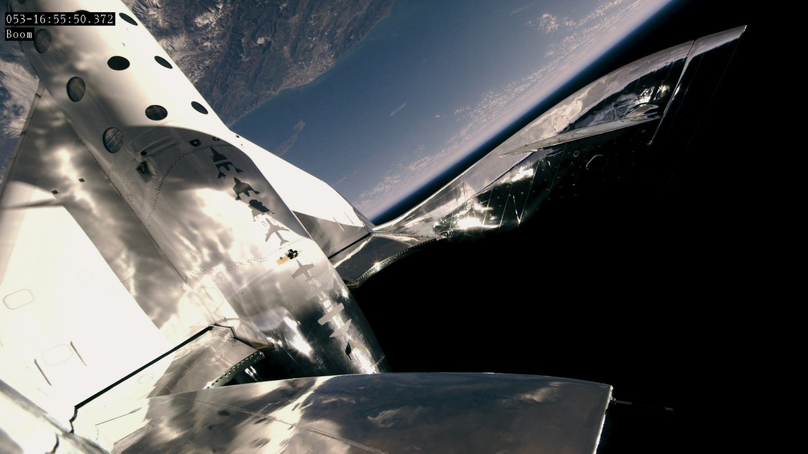

Virgin Galactic Ричарда Брэнсона впервые провела суборбитальный полёт с пассажиром на борту

22 февраля Virgin Galactic запустила при помощи самолёта-носителя космоплан SpaceShipTwo с аэродрома в калифорнийской пустыне Мохаве. Этот же многоразовый корабль совершил испытательный полёт в декабре 2018 года.
Основатель Amazon Джефф Безос критически оценивает достижения Virgin Galactic: корабль его космической компании Blue Origin поднимается на высоту 106 км. Безос планирует отправить в космос человека уже в 2019 году.